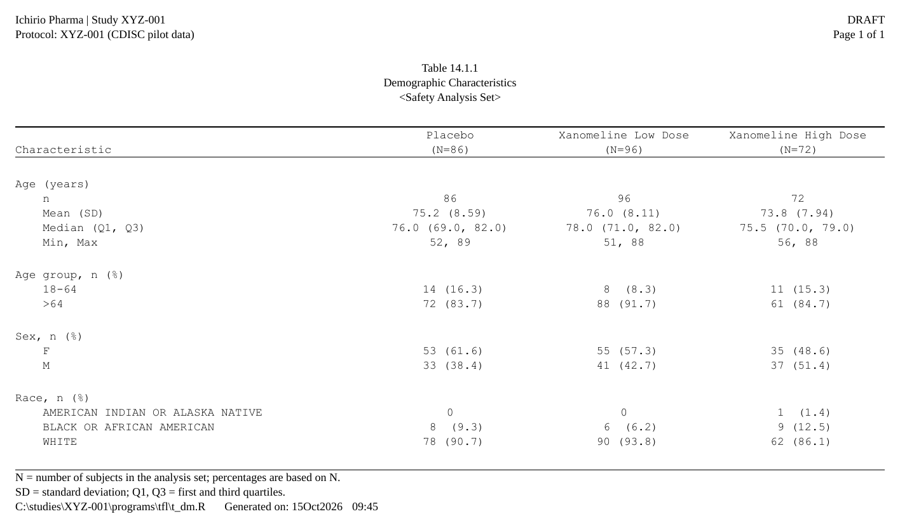
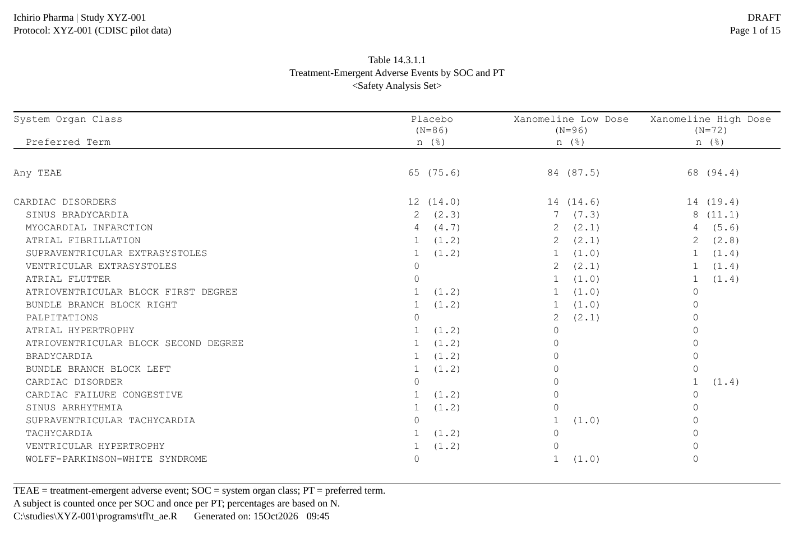
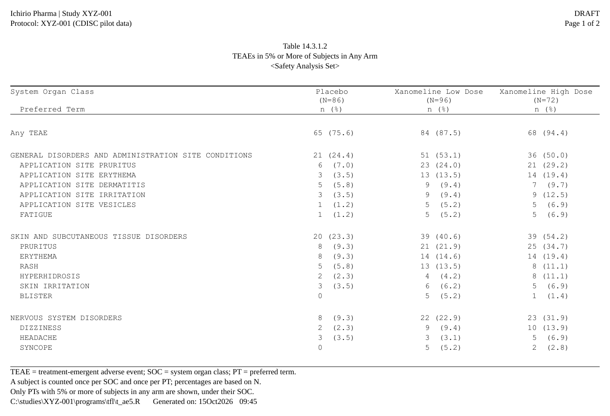
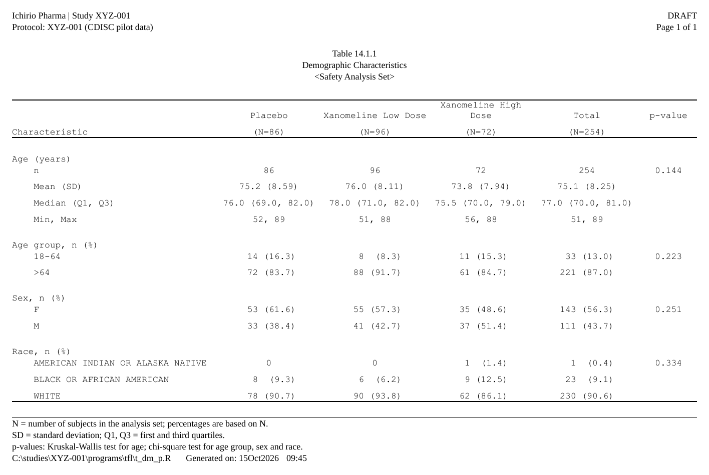
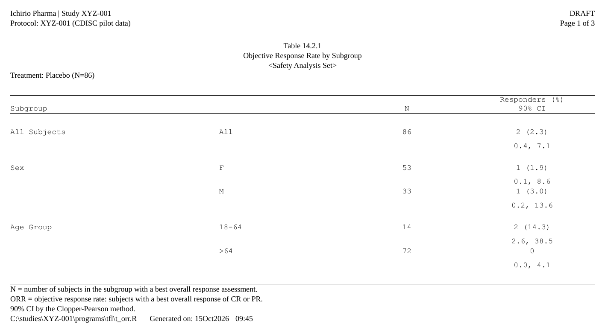

Get started goes through the three steps in the fewest lines; this article takes each of them in turn, then builds more tables the same way.
Most of rtfreporter starts from a table that already exists: a data
frame, a gt, an rtables object, and
as_rtftables() turns it into pages. This article starts one
step earlier, from an analysis results dataset (ARD):
the long frame of statistics that cards and cardx produce,
one number a row.
An ARD holds the numbers but not how the table shows them. Somebody still has to say which key goes across and which goes down, how a mean and an SD become one cell, what the rows are called and what the header says. In rtfreporter that is written as a plan:
|
The ARD made with cards / cardx |
1. The tableard
|>normalize_ard() |>table_plan()
|>plan_*()
|
2. The reportrtf_document()
|>rtf_section()
|>rtf_tables(plan)
|
3. The RTF filegenerate_rtfreport()
|
- The ARD is the input. It is made with cards / cardx, before rtfreporter.
-
1. The table starts from it:
normalize_ard()makes its groups and hierarchy ordinary key columns,table_plan()names the roles (the column that goes across, the ones that go down), and eachplan_*()verb adds one declaration: the cell templates, the labels, the header, the widths. Nothing runs yet. -
2. The report is the document around the table.
rtf_tables(doc, plan)runs the plan and givesrtftablepages, the same objectsas_rtftables()makes (plan_apply(plan)gives them without a document). -
3. The RTF file is written by
generate_rtfreport().
The demographics table this article builds first:

The code is folded under Show code below each step.
The input: the data and the ARD
The ARD is made before rtfreporter, with cards and cardx. That is data preparation, the analysis itself, and outside rtfreporter: see their documentation for what they compute. rtfreporter starts from the ARD as given and changes no number in it.
The examples use the CDISC pilot study as the pharmaverseadam package ships it. The treatment is made a factor so the arms come out in study order.
Show code
A demographics ARD: age summarised, three characteristics tabulated,
all by arm. continuous_summary_fns() adds the quartiles,
which cards leaves out by default.
Show code
ard_dm <- ard_stack(
adsl, .by = TRT01A,
ard_summary(
variables = AGE,
statistic = ~ continuous_summary_fns(
c("N", "mean", "sd", "median", "p25", "p75", "min", "max"))),
ard_tabulate(variables = c(AGEGR1, SEX, RACE)))ard_stack(.by = ) also counts the arms themselves. The
plan reads those counts for the (N=86) in the column
header, so nobody types them.
Step 1: from the ARD straight to a table
What the plan works on: normalize_ard()
A cards ARD keeps its groups as pairs of columns
(group1, group1_level) whose values are lists.
normalize_ard() turns each group into a column of its own,
named after the variable, and adds the columns a table needs: the kind
of each row (.kind), its label and its depth in a
hierarchy.
nd <- normalize_ard(ard_dm)
nd[1:4, c("TRT01A", "variable", "variable_level", "context",
"stat_name", "stat", ".kind")]
#> TRT01A variable variable_level context stat_name stat .kind
#> 1 Placebo AGE <NA> summary N 86.000000 continuous
#> 2 Placebo AGE <NA> summary mean 75.209302 continuous
#> 3 Placebo AGE <NA> summary sd 8.590167 continuous
#> 4 Placebo AGE <NA> summary median 76.000000 continuousThe plan below starts from the ARD and runs
normalize_ard() as its first step. This frame is what it
then works on, and its columns are the names you will use in
table_plan(): look at them first.
The roles
table_plan() takes the roles and nothing else, like
ggplot(aes()):
-
cols: the key that goes across, one column per arm; -
rows: the keys that go down, here the analysis variable, calledgroupin the table.
p <- ard_dm |>
normalize_ard() |>
table_plan(cols = "TRT01A", rows = c(group = "variable"))The cells
plan_cells() says how the statistics become text. A cell
is a template: {mean:.1f} is the mean to one decimal,
{p:.1f%} a proportion shown as a percentage. Entries can be
keyed by the kind of variable:
-
continuous: a named vector, one printed row per name. The name is the row label. -
categorical: one template for every level,n (%). A formula entry comes first and wins where it applies:n == 0 ~ "0"prints a zero count without its(0.0).
Show code
p <- p |>
plan_cells(
continuous = c("n" = "{N:.0f}",
"Mean (SD)" = "{mean:.1f} ({sd:.2f})",
"Median (Q1, Q3)" = "{median:.1f} ({p25:.1f}, {p75:.1f})",
"Min, Max" = "{min:.0f}, {max:.0f}"),
categorical = c(n == 0 ~ "0", "{n:.0f} ({p:.1f%})"),
notes = FALSE)notes = FALSE turns off the message listing the
statistics no template used. Leave it on while you write a plan: it is
how you notice a statistic you forgot.
How it looks
The rest is display. The variables get readable labels and their levels an order, then the header, the stub, blank rows and widths are declared:
Show code
p <- p |>
plan_labels(c(AGE = "Age (years)",
AGEGR1 = "Age group, n (%)",
SEX = "Sex, n (%)",
RACE = "Race, n (%)")) |>
plan_levels(AGEGR1 = c("18-64", ">64"), SEX = c("F", "M")) |>
plan_col_header(values = list(n = TRUE), rtf_col_header(
c("", "{col}"),
c("Characteristic", "(N={n})"))) |>
plan_stub(name = "row_label") |>
plan_blanks(where = "between_groups", first = TRUE, last = TRUE) |>
plan_columns(widths = c(4, 2, 2, 2)) |>
plan_style(border = "tfl", align_count_pct = TRUE)-
plan_stub()folds the variable and its rows into one indented column, the usual look of a demographics table. -
plan_col_header()writes the header with the samertf_col_header()as anywhere else. Its cells can use tokens:{col}is the column’s arm and{n}its population.values = list(n = TRUE)says to read that population from the ARD. -
align_count_pct = TRUElines up thenand the(%)of every count in a column.
The plan still has not run. Printing it lists what it declares, and the values the header tokens will take:
p
#> <table_plan> from a normalized frame, 9 layers -> RTF pages
#> cols "TRT01A"
#> rows group = "variable"
#> 1. cells continuous, categorical
#> 2. cell_options notes
#> 3. labels labels
#> 4. levels levels
#> 5. header header, values
#> 6. stub name, before
#> 7. blanks blank_rows, blank_row_first, blank_row_end
#> 8. columns widths
#> 9. style border, align_count_pct
#> in -- what cols / rows / label may name:
#> TRT01A, variable, variable_level, context, stat_name, stat_label,
#> stat, stat_fmt, .kind, .depth, .label, .label_order, group1,
#> group1_level, fmt_fun, warning, error
#> after widen -- not computed yet; run it once and this print fills in
#> header tokens -- what a plan_col_header() cell may carry:
#> {n} = c(Placebo = 86, Xanomeline Low Dose = 96, Xanomeline High Dose = 72)
#> {n:sum} = 254 over every column (less over a spanner: its own columns)
#> {n:Placebo} = 86
#> {n:Xanomeline Low Dose} = 96
#> {n:Xanomeline High Dose} = 72
#> rtf_tables(doc, x) renders it; plan_apply(x, "args") shows the callStep 2: the report
The report is the document around the table: the running header and
footer, and the table. rtf_tables() takes the plan as it
takes any table, and runs it:
Show code
doc <- rtf_document(
program = "/studies/XYZ-001/programs/tfl/t_dm.R",
tokens = list(STUDY = "XYZ-001")) |>
rtf_section(
header = rtf_header(list(
c(l = "Ichirio Pharma", r = "DRAFT"),
c(l = "Protocol: {STUDY} (CDISC pilot data)", r = "Page {PAGE} of {TOTAL_PAGES}"),
c(c = ""),
c(c = "Table 14.1.1"),
c(c = "Demographic Characteristics"),
c(c = "<Safety Analysis Set>"))),
footer = rtf_footer(list(
c(l = "N = number of subjects in the analysis set; percentages are based on N."),
c(l = "SD = standard deviation; Q1, Q3 = first and third quartiles."),
c(l = "{PROGRAM_FULL} Generated on: {DATETIME}")))) |>
rtf_tables(p)The header is the study and the page number, then the table’s number,
title and population; the footer is its footnotes, then the program’s
full path and the run date and time. {PAGE},
{TOTAL_PAGES}, {PROGRAM_FULL} and
{DATETIME} are filled in when the file is written.
Step 3: the RTF file
generate_rtfreport(doc, "t_dm.rtf", overwrite = TRUE)To see a stage without writing RTF, use plan_apply(). It
gives the pages by default. stage = "table" gives the table
data frame before it is split into pages, which is often the quickest
way to check a cell:
tb <- plan_apply(p, stage = "table")
tb[1:7, ]
#> group label Placebo Xanomeline Low Dose Xanomeline High Dose
#> 1 Age (years) n 86 96 72
#> 2 Age (years) Mean (SD) 75.2 (8.59) 76.0 (8.11) 73.8 (7.94)
#> 3 Age (years) Median (Q1, Q3) 76.0 (69.0, 82.0) 78.0 (71.0, 82.0) 75.5 (70.0, 79.0)
#> 4 Age (years) Min, Max 52, 89 51, 88 56, 88
#> 5 Age group, n (%) 18-64 14 (16.3) 8 (8.3) 11 (15.3)
#> 6 Age group, n (%) >64 72 (83.7) 88 (91.7) 61 (84.7)
#> 7 Sex, n (%) F 53 (61.6) 55 (57.3) 35 (48.6)One header and footer for every table
Every table of a study has the same header and footer; only its
number, title, population, footnotes and program change. The examples
below write them each time with rtf_document(),
rtf_section(), rtf_header() and
rtf_footer(), as a table’s program does.
A layer can be overridden
A plan is a list of layers, and a later layer wins over what an earlier one said about the same key. A house style can be written once and one table adjusted by adding a line, not by editing the original:
Show code
p2 <- p |>
plan_labels(AGE = "Age at baseline (years)") |>
plan_cells(AGE = c("n" = "{N:.0f}", "Mean (SD)" = "{mean:.1f} ({sd:.1f})"))
plan_apply(p2, stage = "table")[1:4, ]#> group label Placebo Xanomeline Low Dose Xanomeline High Dose
#> 1 Age at baseline (years) n 86 96 72
#> 2 Age at baseline (years) Mean (SD) 75.2 (8.6) 76.0 (8.1) 73.8 (7.9)
#> 3 Age group, n (%) 18-64 14 (16.3) 8 (8.3) 11 (15.3)
#> 4 Age group, n (%) >64 72 (83.7) 88 (91.7) 61 (84.7)The AGE entry is narrower than continuous,
so it applies to AGE alone. The other variables keep the
kind-wide template.
Adverse events: a hierarchy, sorted by frequency
A table of adverse events by system organ class (SOC) and preferred
term (PT) starts from ard_stack_hierarchical().
over_variables = TRUE adds the “any event” row, and the
denominator is the safety population in ADSL, so the percentages are of
the arm.
Show code
normalize_ard() is told which variables are the
hierarchy, and what to call the overall row:
Show code
p_ae <- ard_ae |>
normalize_ard(hierarchy = c("AEBODSYS", "AEDECOD"),
overall = "Any TEAE") |>
table_plan(cols = "TRT01A", rows = c(SOC = "AEBODSYS", PT = "AEDECOD"),
label = NA) |>
plan_cells("{n:.0f} ({p:.1f%})", notes = FALSE) |>
plan_sort(".overall", "SOC", ".depth", "-n", "PT") |>
plan_col_header(values = list(n = TRUE), rtf_col_header(
c("System Organ Class", "{col}"),
c(" Preferred Term", "(N={n})\nn (%)"))) |>
plan_stub(name = "System Organ Class\n Preferred Term", indent = 2) |>
plan_blanks(where = "between_groups", first = TRUE, counted = TRUE) |>
plan_paginate_rows(max_rows = 25, split = "group_safe") |>
plan_columns(widths = c(5, 2, 2, 2)) |>
plan_style(border = "tfl", align_count_pct = TRUE)-
plan_sort(".overall", "SOC", ".depth", "-n", "PT")is the row order, key by key: the overall row first, then the SOCs (alphabetically). Within a SOC, its own row comes first (.depth), then its PTs by the number of subjects in all arms, most first (the minus sign means descending), with ties by name.-nalone would order every row by its count and take the PTs away from their SOC. The keys are what keeps the hierarchy together. -
plan_paginate_rows(split = "group_safe")breaks pages between SOCs, not inside one, when a SOC fits on a page.plan_blanks(counted = TRUE)counts the blank rows inmax_rows, so 25 is the rows a page holds. - The header’s
{n}here is the arm’s denominator. It comes from the hierarchical ARD, not from a count of the adverse events.
Show code
doc <- rtf_document(
program = "/studies/XYZ-001/programs/tfl/t_ae.R",
tokens = list(STUDY = "XYZ-001")) |>
rtf_section(
header = rtf_header(list(
c(l = "Ichirio Pharma", r = "DRAFT"),
c(l = "Protocol: {STUDY} (CDISC pilot data)", r = "Page {PAGE} of {TOTAL_PAGES}"),
c(c = ""),
c(c = "Table 14.3.1.1"),
c(c = "Treatment-Emergent Adverse Events by SOC and PT"),
c(c = "<Safety Analysis Set>"))),
footer = rtf_footer(list(
c(l = "TEAE = treatment-emergent adverse event; SOC = system organ class; PT = preferred term."),
c(l = "A subject is counted once per SOC and once per PT; percentages are based on N."),
c(l = "{PROGRAM_FULL} Generated on: {DATETIME}")))) |>
rtf_tables(p_ae)
generate_rtfreport(doc, "t_ae.rtf", overwrite = TRUE)
length(plan_apply(p_ae)) # pages#> [1] 15
Only the common terms, SOCs by frequency
Two more lines turn this into the usual “events in 5% or more” table.
A later layer wins, so they are added to p_ae rather than
written into it:
p_ae5 <- p_ae |>
plan_filter(p >= 0.05) |>
plan_sort(".overall", "-n@SOC", "SOC", ".depth", "-n", "PT")-
plan_filter(p >= 0.05)keeps the PTs that reach 5% in any arm. The condition is on the ARD’s statistics, not on the printed text. A SOC row stays exactly when one of its PTs does (parents = "keep", the default). -
-n@SOCsorts the SOCs by their own count, most first, and keeps each SOC’s rows together.-nalone would sort every row by its count. The@says whose count it is.
Show code
doc <- rtf_document(
program = "/studies/XYZ-001/programs/tfl/t_ae5.R",
tokens = list(STUDY = "XYZ-001")) |>
rtf_section(
header = rtf_header(list(
c(l = "Ichirio Pharma", r = "DRAFT"),
c(l = "Protocol: {STUDY} (CDISC pilot data)", r = "Page {PAGE} of {TOTAL_PAGES}"),
c(c = ""),
c(c = "Table 14.3.1.2"),
c(c = "TEAEs in 5% or More of Subjects in Any Arm"),
c(c = "<Safety Analysis Set>"))),
footer = rtf_footer(list(
c(l = "TEAE = treatment-emergent adverse event; SOC = system organ class; PT = preferred term."),
c(l = "A subject is counted once per SOC and once per PT; percentages are based on N."),
c(l = "Only PTs with 5% or more of subjects in any arm are shown, under their SOC."),
c(l = "{PROGRAM_FULL} Generated on: {DATETIME}")))) |>
rtf_tables(p_ae5)
generate_rtfreport(doc, "t_ae5.rtf", overwrite = TRUE)
A Total column and a p-value: plan_total() and
plan_compare()
A Total column and a test are rows of the ARD like any other:
ard_stack(.overall = TRUE) adds the overall summaries, and
cardx adds the tests. Nothing is computed in the plan.
Show code
ard_dm_p <- bind_ard(
ard_stack(
adsl, .by = TRT01A, .overall = TRUE,
ard_summary(
variables = AGE,
statistic = ~ continuous_summary_fns(
c("N", "mean", "sd", "median", "p25", "p75", "min", "max"))),
ard_tabulate(variables = c(AGEGR1, SEX, RACE))),
cardx::ard_stats_kruskal_test(adsl, by = TRT01A, variables = AGE),
cardx::ard_stats_chisq_test(adsl, by = TRT01A, variables = c(AGEGR1, SEX, RACE)))The plan is the demographics plan from before, with two more verbs:
Show code
p_dm_p <- ard_dm_p |>
normalize_ard() |>
table_plan(cols = "TRT01A", rows = c(group = "variable")) |>
plan_cells(
continuous = c("n" = "{N:.0f}",
"Mean (SD)" = "{mean:.1f} ({sd:.2f})",
"Median (Q1, Q3)" = "{median:.1f} ({p25:.1f}, {p75:.1f})",
"Min, Max" = "{min:.0f}, {max:.0f}"),
categorical = c(n == 0 ~ "0", "{n:.0f} ({p:.1f%})"),
notes = FALSE) |>
plan_total(label = "Total") |>
plan_compare(p = c(p.value < 0.001 ~ "<0.001", "{p.value:.3f}")) |>
plan_labels(c(AGE = "Age (years)",
AGEGR1 = "Age group, n (%)",
SEX = "Sex, n (%)",
RACE = "Race, n (%)")) |>
plan_levels(AGEGR1 = c("18-64", ">64"), SEX = c("F", "M")) |>
plan_col_header(values = list(n = TRUE), lines = list(
c(Characteristic = "", .values = "{col}", p = "p-value"),
c(Characteristic = "Characteristic", .values = "(N={n})", p = ""))) |>
plan_stub(name = "Characteristic") |>
plan_blanks(where = "between_groups", first = TRUE, last = TRUE) |>
plan_columns(widths = c(Characteristic = 5, .values = 2.6, p = 1.4)) |>
plan_style(border = "tfl", align_count_pct = TRUE)-
plan_total()makes the overall rows a column, after the arms. Its(N=254)is the overall count from the same ARD. -
plan_compare(p = )makes a column from the comparison records, the ones with no arm. The cell sits on each variable’s first row. A named vector of templates picks the test by its context, andcell_rows()gives a cell two lines, for an estimate and its CI. - The header and the widths name their columns:
pis the comparison column,.valuesevery arm. A name stays right when columns move.
Show code
doc <- rtf_document(
program = "/studies/XYZ-001/programs/tfl/t_dm_p.R",
tokens = list(STUDY = "XYZ-001")) |>
rtf_section(
header = rtf_header(list(
c(l = "Ichirio Pharma", r = "DRAFT"),
c(l = "Protocol: {STUDY} (CDISC pilot data)", r = "Page {PAGE} of {TOTAL_PAGES}"),
c(c = ""),
c(c = "Table 14.1.1"),
c(c = "Demographic Characteristics"),
c(c = "<Safety Analysis Set>"))),
footer = rtf_footer(list(
c(l = "N = number of subjects in the analysis set; percentages are based on N."),
c(l = "SD = standard deviation; Q1, Q3 = first and third quartiles."),
c(l = "p-values: Kruskal-Wallis test for age; chi-square test for age group, sex and race."),
c(l = "{PROGRAM_FULL} Generated on: {DATETIME}")))) |>
rtf_tables(p_dm_p)
generate_rtfreport(doc, "t_dm_p.rtf", overwrite = TRUE)
Subgroups, a section per arm: stack = and
plan_stat_groups()
An objective response rate (ORR) by subgroup has three things a plain table does not:
- the subgroups come from different variables (sex, age group), shown one under another;
- one cell has several statistics: the responders, the rate and its CI;
- each arm is a section of its own, with its N in the heading.
The ARD is cardx’s CI for each subgroup, and the arm’s own count for the heading:
Show code
bor <- pharmaverseadam::adrs_onco
bor <- bor[bor$PARAMCD == "BOR", c("USUBJID", "AVALC")]
anl <- merge(adsl[, c("USUBJID", "TRT01A", "SEX", "AGEGR1")], bor, by = "USUBJID")
anl$RESPFL <- factor(ifelse(anl$AVALC %in% c("CR", "PR"), "Y", "N"),
levels = c("Y", "N"))
anl$ALL <- "All"
orr <- function(.x) {
cardx::ard_categorical_ci(.x, variables = RESPFL, value = RESPFL ~ "Y",
method = "clopper-pearson", conf.level = 0.90)
}
ard_orr <- bind_ard(
ard_tabulate(anl, variables = TRT01A),
ard_strata(anl, .by = TRT01A, .strata = ALL, .f = orr),
ard_strata(anl, .by = TRT01A, .strata = SEX, .f = orr),
ard_strata(anl, .by = TRT01A, .strata = AGEGR1, .f = orr))Show code
p_orr <- ard_orr |>
normalize_ard(stack = list(subgroup = "group2")) |>
table_plan(cols = ".stat_group",
rows = c(arm = "TRT01A", grp1 = "subgroup", grp2 = "subgroup_level"),
label = NA) |>
plan_cells(
n = c("1" = "{N:.0f}"),
orr_ci = cell_rows(
"1" = c(n == 0 ~ "0", "{n:.0f} ({estimate:.1f%})"),
"2" = "{conf.low:.1f%}, {conf.high:.1f%}")) |>
plan_stat_groups(n = "N", orr_ci = c("n", "estimate", "conf.low", "conf.high")) |>
plan_labels(subgroup = c(ALL = "All Subjects", SEX = "Sex", AGEGR1 = "Age Group")) |>
plan_col_header(header = rtf_col_header(
list(col_cell(c("grp1", "grp2"), "Subgroup"),
col_cell("n", "N"),
col_cell("orr_ci", "Responders (%)\n90% CI")))) |>
plan_blanks(where = "between_groups", first = TRUE, last = TRUE) |>
plan_paginate_rows(page_by = "arm", max_rows = 20, split = "group_safe",
heading = "Treatment: {value} (N={n})") |>
plan_row_group(mode = "value", collapse = c("grp1", "grp2")) |>
plan_hide("arm") |>
plan_columns(widths = c(grp1 = 25, grp2 = 15, .values = 15),
row_title = c("grp1", "grp2")) |>
plan_style(border = "tfl")-
normalize_ard(stack = list(subgroup = "group2"))puts what each analysis holds ingroup2(hereALL,SEX,AGEGR1) into one pair of columns:subgroupis the variable andsubgroup_levelits level. A list of variables picks and orders them, and a pair likec("AGEGR1", "SEX")makes a crossed subgroup. -
plan_stat_groups()makes the columns from groups of statistics:cols = ".stat_group"is one column per group, and each group’s template can use all of its statistics. -
plan_hide("arm")withplan_paginate_rows(page_by = "arm", heading = )makes one section per arm. The heading’s{n}is the arm’s own count in the ARD. The arm is a page key, so the row groups, the blank rows andcollapsestart atgrp1. - The rest is layout:
label = NAsays there is no label column (the subgroup’s level is the row text),collapseprints a repeated subgroup name once, androw_titlemakes the two subgroup columns the row headings. The rows keep the ARD’s order, asstackgives it: a plan moves a row only where an order was declared (plan_levels(), a factor,plan_sort()).
Show code
doc <- rtf_document(
program = "/studies/XYZ-001/programs/tfl/t_orr.R",
tokens = list(STUDY = "XYZ-001")) |>
rtf_section(
header = rtf_header(list(
c(l = "Ichirio Pharma", r = "DRAFT"),
c(l = "Protocol: {STUDY} (CDISC pilot data)", r = "Page {PAGE} of {TOTAL_PAGES}"),
c(c = ""),
c(c = "Table 14.2.1"),
c(c = "Objective Response Rate by Subgroup"),
c(c = "<Safety Analysis Set>"))),
footer = rtf_footer(list(
c(l = "N = number of subjects in the subgroup with a best overall response assessment."),
c(l = "ORR = objective response rate: subjects with a best overall response of CR or PR."),
c(l = "90% CI by the Clopper-Pearson method."),
c(l = "{PROGRAM_FULL} Generated on: {DATETIME}")))) |>
rtf_tables(p_orr, auto_section = TRUE)
generate_rtfreport(doc, "t_orr.rtf", overwrite = TRUE)
names(plan_apply(p_orr)) # one section per arm#> [1] "Treatment: Placebo (N=86)" "Treatment: Xanomeline Low Dose (N=96)"
#> [3] "Treatment: Xanomeline High Dose (N=72)"
Writing a plan with an AI assistant
rtfreporter is newer than what a chat model has learned. Give it the manual that matches the version you have installed, in one folder:
rtfreporter_ai_manual("ai-kit", ard = ard_orr)The folder has a request to start from, the user manual, three
complete programs in the same layout as this article (the ORR above,
adverse events, demographics with a Total and a p-value) and, with
ard =, your ARD with a note of its keys and statistics.
Attach it to a chat with a table shell. Nothing is sent anywhere by the
function.
Without a plan: widen_ard()
A plan defers everything until it runs, which is what lets a later
layer win and a plan be saved and reused. When you want the table data
frame now, widen_ard() does the ARD half in one call. It
takes the same templates, and gives you a frame to finish with
as_rtftables() as usual:
Show code
#> group label Placebo Xanomeline Low Dose Xanomeline High Dose
#> 1 AGE Mean (SD) 75.2 (8.59) 76.0 (8.11) 73.8 (7.94)
#> 2 AGE Median 76.0 78.0 75.5
#> 3 AGEGR1 18-64 14 (16.3) 8 (8.3) 11 (15.3)
#> 4 AGEGR1 >64 72 (83.7) 88 (91.7) 61 (84.7)
#> 5 SEX F 53 (61.6) 55 (57.3) 35 (48.6)
#> 6 SEX M 33 (38.4) 41 (42.7) 37 (51.4)Use widen_ard() to get at the numbers quickly, or to
hand the frame to something else. Use a plan for a table that is part of
a report.
Where to start: plan_template()
plan_template() reads an ARD and writes a starting plan
for it, with the roles guessed, a template for every kind of variable it
finds, and the display verbs set to common values. It is meant to be
pasted into your program and edited:
plan_template(ard_dm, cols = "TRT01A", file = "t_dm_plan.R")Where next
- The plan verbs: what each verb declares, grouped by job.
- Listings with a plan: a plan with no ARD at all.
-
From as_rtftables() to a
plan: which verb takes over each
as_rtftables()argument.